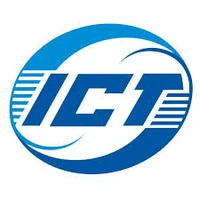

About Me
Hi! I'm Haoran Wu (George) (邬浩冉), a second-year PhD student in the Department of Computer Science and Technology at the University of Cambridge, supervised by Prof. Robert Mullins. My PhD is funded by the Scaling Compute project via ARIA.
My current research interests cover NPU design, ML systems, and ML inference acceleration. Previously I worked on RISC-V verification and design-space exploration for customisable processors.
Education
University of Cambridge
Ph.D. in Computer Architecture
Supervised by Prof. Robert Mullins and Prof. Timothy Jones.
2024 - Present

Imperial College London
MEng in Electronic and Information Engineering
Graduated with First Class Honours.
Dean's List (Top 10% in the department, 2020/21, 2021/22 & 2023/24). Runner-up, Second-Year Group Project.
Master's thesis supervised by Prof. Wayne Luk and Dr. Ce Guo.
2020 - 2024
Experience

Institute of Computing Technology, Chinese Academy of Sciences
Research Intern
Advisor: Dr. Kan Shi
Built an FPGA-based hardware fuzzer that automatically generates stimuli for RISC-V processors, and developed a verification system running fully on a Xilinx Zynq SoC.
Apr 2023 - Sep 2024
Imperial College London — UROP
Undergraduate Research Opportunities Programme
Advisor: Dr. James Davis
Developed an FPGA-based object detection system using Binary Neural Networks; trained and converted a YOLO model into a Residual Binary Network with TensorFlow.
Jun 2022 - Sep 2022